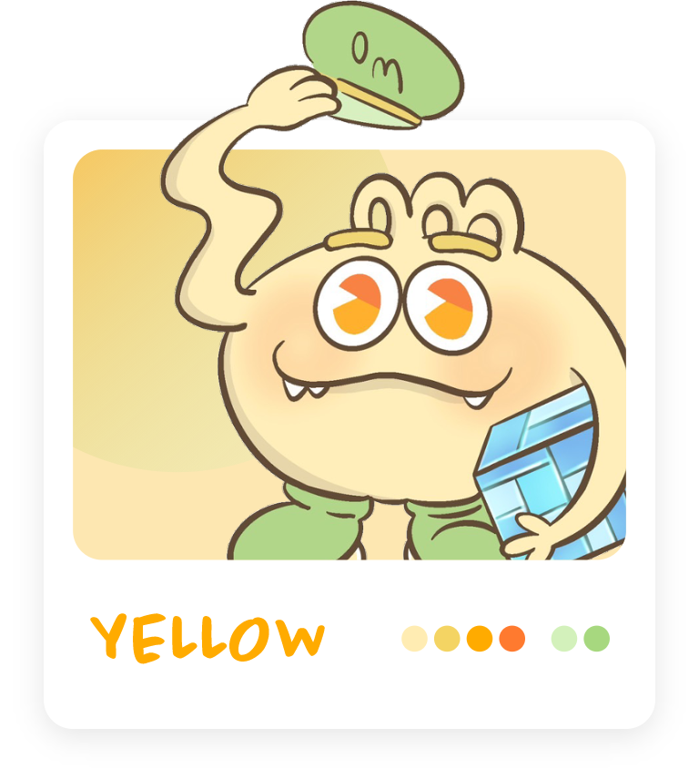

Home
Home
OMFLOW 為凌群電腦旗下品牌，主打自動化流程引擎讓使用者能自由設計表單，同時也能進階處理實際資料和系統自動化命令等設定。
此次專案為 OMFLOW 設計專屬吉祥物，融入品牌特點與親民風格為企業帶來活力新氣象。


SKETCH
構思初期，手繪草稿便是第一道與客戶溝通的媒介，參考客戶所喜愛的怪獸元素，在反覆的調整與思想碰撞下融合產品意象，繪製出符合品牌形象的專屬吉祥物。THREE VIEW
除了手繪稿與 AI 三視圖外， 定稿確認後會將平面稿轉為 3D 三視圖內外討論，以利再次核對各處細節與模型調整，在視覺上也更貼近於真實產品。彈簧手臂
象徵彈性設計表單的自由度

郵差帽
表單派送員的郵差帽
造型設計
融入 OMFLOW LOGO， 讓吉祥物更具代表性
直排輪鞋
傳送快速、無遠弗屆
OTHERS COLOR
致配色階段時，會提出三種配色供客戶選擇，理念是以色彩三原色為發想再融合相似色與互補色做搭配，並結合低飽和粉色調，使角色更加平易近人視覺上也能富含更多層次。



角色姿勢
從固定姿勢做變換，以骨架綁定的方式調整出符合企業形象的動作，帶出活潑感讓模型更適合放置在各平台宣傳。